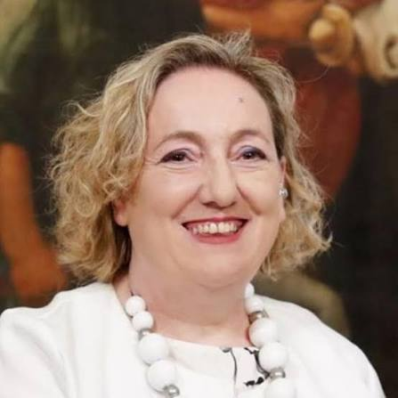

DYNAMES
DYNAMES
The rise of a multipolar order has confronted the European Union with a question it has not yet fully answered: how can Europe remain central in a world that no longer takes its normative and values-based framework as a reference?
It is a question that Emanuela C. Del Re has engaged with not only from the outside, but from within the European institutions themselves. Former Deputy Minister for Foreign Affairs (2018-2021) of Italy and EU Special Representative for the Sahel (2021-2024) and political sociologist, she has spent decades working on the field in conflict zones - from the Balkans and the Caucasus to the Middle East and sub-Saharan Africa - bringing to this conversation both the analytical rigour of an academic and the operational experience of someone who has negotiated at the table, not only written about it.
Professor Del Re, when you participate in events on international affairs and you are asked to address Europe’s role in the current global order, what is your reading of the situation?
My starting point is an honest recognition of where we stand. The European Union operates today in a world that is no longer structured around Western-defined norms and values, even if those were genuinely universal in aspiration. In fact, the world order today has become increasingly multipolar. For example, part of the Global South does not anymore perceive European values as universal, rather as norms universalized by Europe. Europe must reflect on this, not abandoning its principles, rather rethinking the way Europe engages in the global debate. The urgency of current events makes Europe concentrate on the relationships with the major actors involved such as the United States, Russia, Ukraine, China, India, Iran and others. But the world is far more interconnected. One element emerges strongly: the fact that most of the countries of the Global South share perspectives, historical experiences, and geopolitical interests that are simply not reducible to alignment or non-alignment with the West. The colonial experience alone makes Europe’s relationship with much of the Global South complex. However, it must be recognized that Europe has genuine assets: a welfare model that remains, in many respects, the most functional in the world; its diplomatic tradition of not being maximally aligned with any single power bloc is today; and a proven capacity to build multilateral frameworks. The challenge is to deploy these assets without the paternalism that has historically undermined the European Union’s engagement.
Europe’s internal decision-making is frequently cited as a structural obstacle to effective foreign policy. Is the debate on qualified majority voting a genuine solution, or does it risk creating a different set of problems?
No doubt that there is a constant tension in a positive a critical sense, and I say this as someone who has experienced the constraints of unanimity firsthand. Reaching consensus among twenty-seven member states on issues as sensitive as foreign policy can be difficult. There can be bilateral sensitivities. These issues can influence collective decision-making to the point of blocking it in some cases. Qualified majority voting would make EU decision making processes faster and more operational. But some sustain that the cost could be high on the basis of the idea that no member state would like to find itself in a minority position on a decision that directly affects its national interests or security environment. Qualified majority voting, particularly on key issues such as foreign policy and common defense would be essential to eliminate individual member states' veto power to avoid EU decision-making paralysis.
You were EU Special Representative for the Sahel during a period – 2021 to 2024 - that saw several military coups in Mali, Burkina Faso, and Niger, explicitly invoking anti-neocolonial sentiment, often directed at France. How did you navigate dialogue in that context?
What makes the Sahel a unique region, particularly in the case of the three coup-affected countries, is not only its complexity – not always recognized and understood by Europe - but the weight of the colonial past and its contemporary resonance in the relationship with the world. It impacts on all the choices especially in Mali, Burkina Faso and Niger as regards international relations, from welcoming Russia as the military partner to asking the UN to end its MINUSMA mission and other. The governments in Bamako, Ouagadougou, and Niamey, in addition to a complete opposition to France’s military presence, also articulated such a rejection in terms of a broader historical grievance in a continental context that shares the same sentiment although not at the cost of endangering the solid partnership with the EU and its member states.
In my political and diplomatic action, I insisted on the necessity of always maintaining an open dialogue, because the region is strategically fundamental for the EU. I have always defined it the real southern border of Europe. The countries that have decided to form the Alliance of the Sahel (Mali, Niger, Burkina Faso) have always interacted with Europe, prevalently through France. They know European mechanisms very well, they speak French, they are capable of using cross-cultural means having studied mostly in Western countries. Their diplomatic skills are very high and challenging. This is why I think there is an opportunity to talk, on which common solutions can be built, despite their strenuous opposition to European positions. The European Union is a fundamental partner for the countries of the region.
Certainly a difficult issue is how to interact with the current leaders in Mali, Burkina Faso and Niger. They came to power through a coup, however, they have acquired a global stature as representatives of an anti-neocolonial movement that is, in my view, extremely widespread - not only in Africa, but beyond the borders of the continent. In particular in Burkina Faso, President Ibrahim Traoré has become a global icon. In my opinion for the EU political action to be effective, it is crucial to understand the impact of these leaders today above all at the global level, to avoid strategic errors. It is necessary to find formulas for engagement that do not betray in the slightest our principles and our red lines – that is respect for civil rights, return to constitutional order, etc. - but that nonetheless preserves the possibility of constructive communication, above all for the benefit of civilian populations.
I want to underline that the EU has always maintained its engagement in humanitarian aid that is a true and most effective diplomatic instrument. The EU continues to provide humanitarian aid consistently - even in cases of government hostility or coups, because the EU is always on the side of the population. In the end there is a rationality in all this: the EU must work on its profile as a genuine interlocutor in the world capable of advancing its principles through strategic instruments such as humanitarian aid. Because as I always sustain, humanitarian aid is a political statement. It is not a form of charity or do-goodism: providing humanitarian aid means recognizing that a problem exists (there are governments that deny it), that populations are suffering, and that it is necessary to intervene to improve conditions.
Russia’s role in the region, first through Wagner, now through what is formally described as the Africa Corps, is often presented as a destabilizing factor. How do you assess the strategic weight of Russian influence in the Sahel?
Russia is not a new actor in Africa. The historical relationship goes back at least to the 1940s, and has deepened consistently during the decolonization period, when the Soviet Union positioned itself as a natural ally of independence movements against European colonial powers. History provides Russia with a reservoir of symbolic capital that Western actors systematically underestimate and do not possess.
In the Sahel specifically, Russia’s capacity to project influence has been amplified by a pre-existing substrate of anti-Western sentiment, particularly anti-French sentiment, that Russian actors have exploited with considerable effectiveness. Disinformation campaigns - through social media, influencers, and informal networks - have found fertile ground in societies where the narrative of Western exploitation has deep structural resonance.
The strategic damage Russia inflicts is applied more strongly through what I would call a short-circuit effect: by consistently reinforcing the idea that any Western engagement is neocolonial in nature, it makes constructive partnership far more difficult to build, regardless of its actual merit. However, Europe is a fundamental partner for the countries of the Sahel, they know this well: the partnership with the EU will always be a priority for them because of pragmatism and of the perspectives for development offered by the partnership with the EU.
It cannot be denied that there is a deeper problem related to the credibility and influence of the European Union. This emerged for example when the EU promoted UN resolutions against Russia not all African countries voted in favor. The EU needs to understand this dynamic more clearly, and respond to it more intelligently and strategically. More knowledge and recognition of the complexity of African thinking is crucial.
Is the Mattei Plan a genuine contribution to this recalibration, or does it risk to reproduce the same structural problems in a different format?
I would begin with a point that is worth stating plainly: the fact that a major European country has decided to develop a structured strategic framework for engagement with Africa is, in itself, a positive and effective action. Africa is chronically absent from European public discourse. It appears episodically, in the context of migration or security crises, and then disappears again. Mattei Plan put Africa amongst the priorities of the political agenda of an important country such as Italy, and this can act as an inspiration for others.
After all it is surprising that in 2026 Italy must still reassure the African governments that the Mattei Plan is not a predatory initiative, that the intention is genuine partnership, that billions of euros in investments, including significant climate-related commitments, are not simply a new form of conditionality. The fact that this reassurance remains necessary despite the consolidated partnership tells us something important: the credibility deficit of the West in Africa is an issue, and it will not be resolved by any single plan, however well-designed. The Mattei Plan contributes to change this situation significantly.
We must reflect on how to remain influential, credible, and how to sustain our principles over time. We can count on the fact that the EU is the largest economic, trade, and development partner, and this means that Africa and the EU can build the future together. I am strongly convinced that this partnership will become stronger and more fruitful, however we must develop a common language that can really reflect our relationship for the years to come.
In conclusion I can summarize my thought mentioning the three greatest challenges that in my opinion are going to emerge in this century: preserve diplomacy, protect human rights, render sustainable our interventions. These are the questions we must seriously engage with.
About Emanuela Claudia Del Re

Emanuela Claudia Del Re is a member of the Board of the European Council on Foreign Relations (ECFR) and Vice Chair of the Department of Foreign Affairs of Forza Italia. She served as EU Special Representative for the Sahel (2021 - 2024) and as Deputy Minister for Foreign Affairs and International Cooperation of Italy (2018 – 2021. She was a member of the Italian Parliament in the XVIII Legislature and President of the Agenda 2030 Commission in the Parliament (2018-2021). A university professor of Political Sociology specializing in foreign policy, geopolitics, international relations, migration, and conflict, she has conducted field research in conflict zones since 1991, across the Balkans, the Caucasus, the Middle East, and Africa. She is the author of numerous publications, including Women and Borders: Refugees, Migrants and Communities (Tauris, 2018) Female Combatants in Conflict and Peace: Challenging Gender in Violence and Post-Conflict Reintegration (Palgrave, 2015)